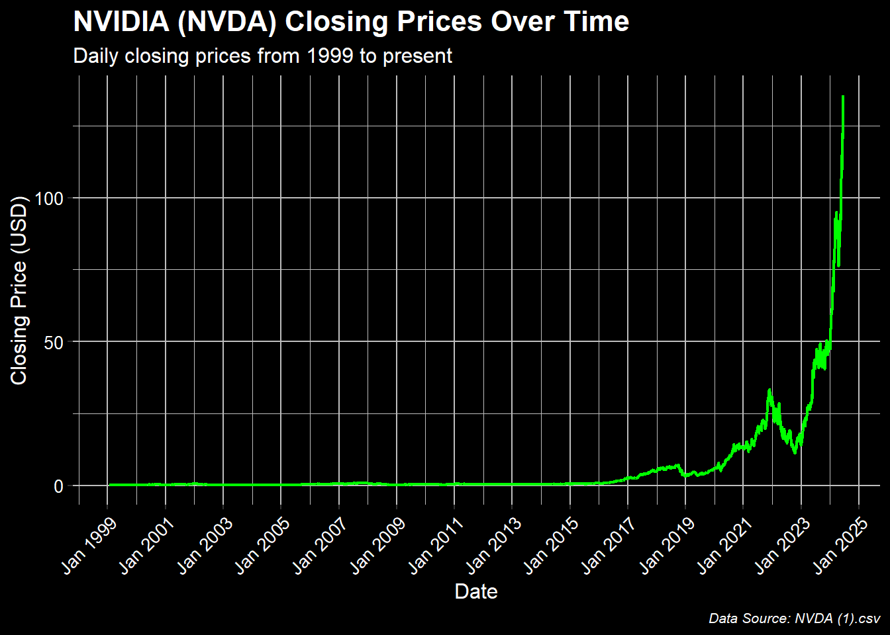

NVIDIA Closing Prices
Nvidia is the maker of the chips leading the ai revolution and is one of the fastest growing tech companies in the stock market.
The dataset is derived from publicly available historical stock price data for NVIDIA Corporation (NVDA), sourced from a trustable financial database. This dataset can be accessed through kaggle. The dataset includes daily closing prices from 1999 to the present, covering a period of significant growth and volatility in the stock market.
The closing prices of NVIDIA (NVDA) stocks have shown significant growth over the years, with notable increases during certain periods, reflecting the company’s expansion and market performance. Nvidia has been competing with companies such as Apple, Microsoft, and Google and outgrowing them as well!
Jan 2019 - Jan 2022: NVDA 79% increase This was caused heavily by their graphics-processing unit (GPU) and artificial intelligence (AI) returns
Jan 2022 - Jan 2023: NVDA 52% decrease This was mostly due to the covid market crash and all of position holders closing their positions as they feared the crash would get worse
Jan 2023 - Present Date: NVDA 681% increase The rise in quality and demand of NVDA’s semiconductors allowed the company to rise at such an exponential rate